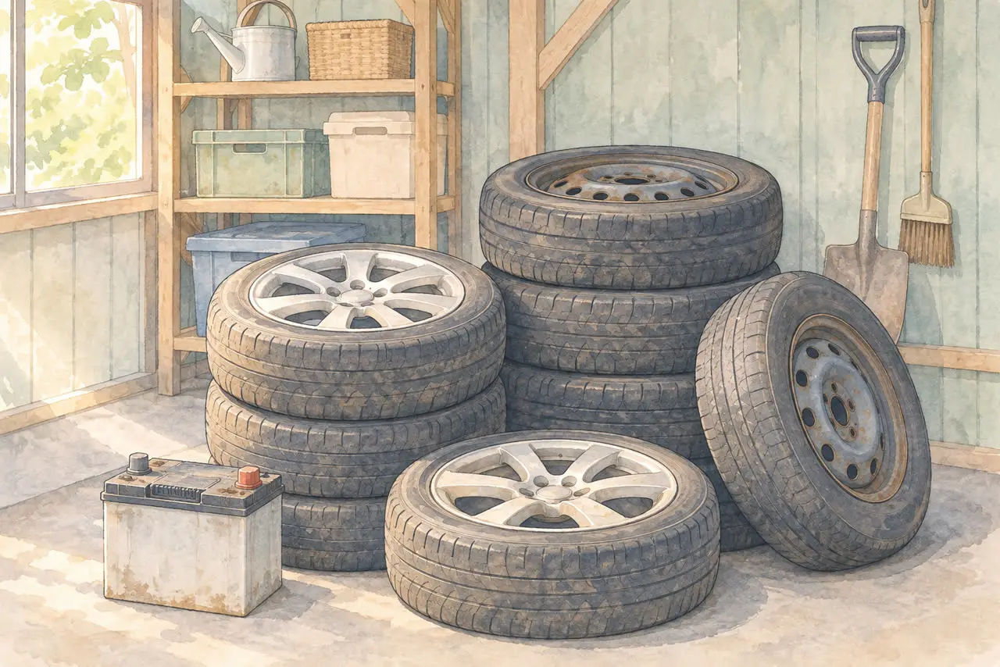
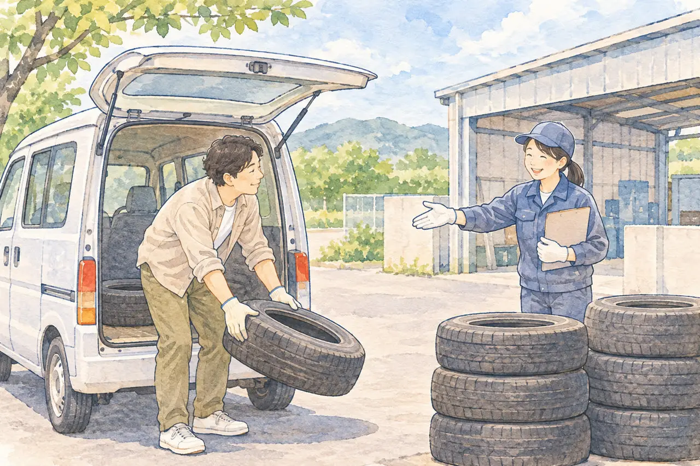

古いタイヤ・バッテリーの処分に困っている方へ
古いタイヤ・バッテリーを処分したい
足立区の大崎商店の引き取り料金と、持ち込み方
公開
こんにちは、東京都足立区江北で自動車解体・廃車買取をしている「大崎商店 環七店」です。
「古いタイヤが、物置に何本も残っている」
「交換したバッテリーを、どうやって捨てればいいの？」
「区のごみには、出せないと言われた」
タイヤやバッテリーは、ふだんのごみとは違い、処分の方法に困る方が多いものです。この記事では、自動車用のタイヤと、一般的な自動車用バッテリー（鉛蓄電池）を扱います。モバイルバッテリーなど、小型充電式電池の捨て方とは異なります。
この記事では、古いタイヤ・バッテリーを処分する方法と、注意したいことを、やさしくご紹介します。後半では、足立区の大崎商店の引き取り料金と、持ち込み方を、はっきりご案内します。
① タイヤ・バッテリーは、区のごみには出せません

足立区の案内では、タイヤとバッテリーは、区が収集・運搬・処理・処分のいずれも行わない「処理が困難なもの」とされています。
- タイヤ：購入した販売店・取扱店に相談します
- バッテリー：購入した販売店・取扱店や、専門の業者に相談します
- 処分先がわからない場合は、足立清掃事務所へ相談できます
つまり、粗大ごみや、燃やさないごみとして出すことは、できません。
② 処分する方法
古いタイヤ・バッテリーは、次のような方法で、処分できます。
| 方法 | 内容 |
|---|---|
| 購入した販売店 | タイヤ販売店、カー用品店、ガソリンスタンド、自動車販売店など。費用がかかることがあります |
| 引き取りを行っている専門の業者 | 解体業者や、中古タイヤを扱う店など。料金や、持ち込みか訪問かは、店によって異なります |
| 新しいタイヤ・バッテリーに交換するとき | 古いものを、その場で引き取ってもらえる場合があります |
日本自動車タイヤ協会の案内でも、一般の方の廃タイヤは、販売店に処理費を払って引き取ってもらうのが一般的とされています。引き取りを希望する店に、事前に電話で、処理費と引き取り方法を確認するよう、案内されています。
③ 気をつけたいこと
無許可の回収業者を、利用しない
「無料で回収」といった広告だけで判断せず、適正な回収を行う事業者か確認しましょう。家庭の廃棄物の回収には、原則として市区町村の一般廃棄物処理業の許可や委託が必要です。産業廃棄物処理業や古物商の許可だけで、家庭ごみ全般を回収できるわけではありません。足立区・環境省も、無許可の回収業者を利用しないよう注意を呼びかけています。
一方、家庭から出た廃タイヤには、法令の条件を満たすタイヤ販売店が引き取れる仕組みがあります。すべての引き取り先に同じ許可が必要、という意味ではありません。購入した販売店や、自治体が案内する処理先に確認してください。
会社・お店で出たタイヤは、扱いが違います
家庭から出た廃タイヤは「一般廃棄物」ですが、事業活動で出た廃タイヤは「産業廃棄物」です。社用車のタイヤが数本という場合も、家庭用と同じ扱いにはなりません。
事業系の廃タイヤの処理を委託する場合は、対象となる廃棄物の許可を持つ収集運搬業者・処分業者へ確認します。タイヤ販売店での交換に伴う引き取りや、販売時の無償下取りには別の扱いがあります。交換を伴わず、古いタイヤだけを持ち込む場合も、事前に処理先へ確認してください。
会社で使ったバッテリーは、タイヤと一括りにせず、種類や引き取り方法に応じて販売店・専門業者へ確認してください。
引き取り前に、必ず確認すること
- 料金：1本いくらか。税別か、税込か
- 持ち込みか、取りに来てくれるか：自分で運べるか
- 対象になるもの：タイヤのみか、ホイール付きでもよいか。バッテリーは対象か
- 支払い方法：現金のみか、カードも使えるか
- 受付時間・曜日
車そのものを廃車にするときの費用の考え方は、「廃車の手数料・解体費用・レッカー代は？かかるお金と、かからないお金を整理」の記事をご覧ください。
大崎商店の場合：タイヤ・バッテリーの引き取り
ここからは、足立区の大崎商店の場合を、はっきりご案内します。

大崎商店では、タイヤとバッテリーの引き取りを、行っています。お店に、お持ち込みいただく形です。持ち込み先は、環七店・入谷店の、どちらでも可です。1本から、OKです。
引き取り料金（タイヤは1本あたり）
| 品目 | 料金 |
|---|---|
| バッテリー | 無料 |
| アルミホイール付きのタイヤ | 無料 |
| スチールホイール付きのタイヤ | 500円（税別）（税込550円） |
| タイヤだけ（ホイールなし） | 1,000円（税別）（税込1,100円） |
- 料金は、お店にお持ち込みの場合の料金です
- タイヤの料金は、1本あたりです
- お支払いは、現金のみです。カード・QR決済には、対応していません
引き取り（お客様のお宅への訪問）について
タイヤ・バッテリーだけの、引き取りの訪問は、現状、行っていません。 お持ち込みをお願いします。
車の引き取りに伺うときに、一緒になら、タイヤやバッテリーも、お引き取りします。 廃車・事故車の引き取りとあわせて、ご相談ください。くわしくは、出張引き取りの対応エリア｜無料で伺える範囲は？の記事をご覧ください。
お持ち込みの前に
来店の前に、一度、お電話で確認をお願いします。 お電話では、次の内容をお伝えください。
- 持ち込む品目（タイヤ・バッテリー）と、本数・個数
- タイヤの場合は、ホイールの種類（アルミか、スチールか、ホイールなしか）
- 持ち込み先（環七店・入谷店のどちらでも可）と、受付の日時は、お電話でご案内します
ホイールが、アルミかスチールか、わからない場合は、お電話で、そのままお伝えください。
バッテリーは、会社で使用したものや、数が多い場合も、お電話でご相談ください。 種類と個数をお伝えください。
車のお持ち込みも、歓迎しています
車ごとの、お持ち込みも、どこからでも歓迎です。くわしくは、廃車する車を、自分でお店に持ち込むときの流れ｜事前連絡と、必要なものの記事をご覧ください。
大崎商店では、
- 解体費用・手続き代行費用・印紙代は別請求しません
- 足立区内は、引き取り無料
- 足立区外も、買取価格がつかない車は、環七店から片道約30分圏内は引き取り無料
- 買取価格がつく車は、圏外でも、所在地と車の状態によっては無料で引き取り（事前にご案内します）
- 車のお持ち込みは、どこからでも歓迎（基本は環七店。日時は、事前にお電話でご相談ください）
よくある質問
Q. タイヤは、粗大ごみで出せますか？
A. 足立区では、タイヤは区で収集できないものとされています。購入した販売店や、専門の業者に相談してください。
Q. バッテリーは、どこで処分できますか？
A. 購入した販売店や、専門の業者に相談します。区では収集しません。
Q. 購入した店が、わかりません。
A. 処分先が分からない場合は、足立清掃事務所へ相談できます。
Q. 無料で回収する業者に、渡してもいいですか？
A. 無料というだけで判断せず、適正な回収を行う事業者か確認してください。足立区・環境省も、無許可の回収業者を利用しないよう注意を呼びかけています。
Q. タイヤの処分には、費用がかかりますか？
A. 依頼先によって異なります。販売店で、処理費を払って引き取ってもらうのが、一般的です。持ち込む前に、料金を電話で確認しましょう。
Q. 会社で出た古いタイヤも、処分できますか？
A. 事業で出た廃タイヤは、社用車の数本でも産業廃棄物として扱います。必要な許可等を備えた処理先へ確認してください。タイヤ交換や購入に伴う引き取りとは、扱いが異なる場合があります。
タイヤ・バッテリーのことも、大崎商店にご相談ください
電話で相談する 03-3854-4141メールで相談する（フォーム）ご来店の前に、お電話ください。引き取りなどで外出していることもあり、お電話いただければ、受け入れの可否や、ご案内できる日時をお伝えできます。
大崎商店 環七店
電話：03-3854-4141
〒123-0872
東京都足立区江北7丁目1−3
営業時間：月〜土 10:00〜18:00
休業日：日曜・祝日
環七沿い／舎人ライナー
西新井大師西駅
大崎商店 入谷店
電話：03-3899-2837
〒121-0836
東京都足立区入谷7丁目5−11
営業時間：月〜土 9:30〜17:30
休業日：日曜・祝日・第2土曜
引き取りやご相談のお電話は、環七店がスムーズです。お電話の際は、「タイヤ（バッテリー）の持ち込みについて」とお伝えください。
※掲載のイラストはAIで作成したイメージです。実際の店舗・車の様子を撮影したものではありません。
参考：足立区・区が収集できないもの／日本自動車タイヤ協会・廃タイヤの取扱い／足立区・廃棄物を無許可で回収する業者を利用しないでください／環境省・無許可の回収業者を利用しないでください